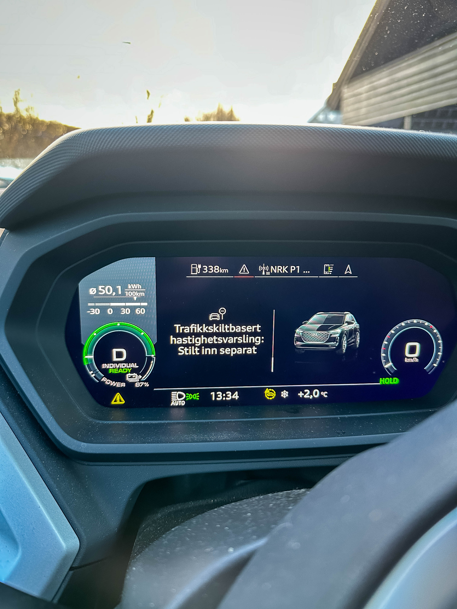

Denne siden inneholder en oversikt over problemer knyttet til Audi Q4 2024-modellen (registreringsnummer EH85053).
Feilene er gruppert etter når de har oppstått og om de allerede har blitt rapportert til verkstedet.
Du finner også en kontaktlogg som dokumenterer kommunikasjon med Audi/Møller.
| Dato |
Beskrivelse |
Bilder |
| div |
Stadig bortfall av nettilgang, selv i tettbyde strøk, feks Oslo Sentrum. Kommer typisk omsider tilbake. |
|
| 20250120 |
head-up-displayet forsvant under kjøring igjen. |
|
| 20250120 |
Pushmelding i app-en: "Det har oppstått en feil ladenettet" (sic) med tilhørende feil i app-en. Disse kommer
nesten daglig, og stammer nok fra at vi bruker smartlading, så det ikke nødvendigvis er strøm i ladekabelen
når vi plugger den i. dette er jo imidlertid ikke en feil - det er helt normalt, og bilen/app-en bør ikke
feile pga dette.
|
|
| 20250119 |
head-up-displayet forsvant under kjøring igjen. |
|
| 20250117 |
Mange feilmeldinger om å kontakte verksted/systemfeil. Ikke samme ordlyd som de som dukker opp ved dårlig
sikt lenger
ned. Mer "alvorlig" ordlyd. Feilene forsvant ved omstart av bilen.
|

|
| 20250117 |
Feil med app-en - Det var ikke mulig å sette på klimaanlegget. "ukjent feil" og "Serveren har sendt et
ugyldig svar". Det hjelper ikke å prøve igjen (som feilmeldingen sier).
|
|
| 20250113 |
Feil med app-en - Det var ikke mulig å sette på klimaanlegget. "ukjent feil" og "bilen svarer ikke". Det
hjelper ikke å prøve igjen (som feilmeldingen sier).
|
|
| div |
Dette har skjedd 3-4 ganger: en del tjenester er ikke tilgjengelig - automatisk fjernlys,
skiltgjenkjennelse, osv.
Regner med at det har med sikten til sensorene å gjøre, men ganske irriterende når man ikke vet hvor man
skal
fjerne is.
|
Ingen bilder |
| div |
Feilen med ladeluka som stadig viser rødt lys uten at det er noe feil. Det er også feil fra app-en om at det
er noe feil med ladingen.
Ladingen (smartlading) ser imidlertid ut til å fungere som den skal.
|
|
| Beskrivelse |
Bilder |
| MMI: Husker ikke at vi vil ha favoritter i stedet for media som hurtigvalg. Blir resatt hver gang vi kjører
bilen.
|
Ingen bilder |
| Kart: Husker ikke innstillinger, som for eksempel zoom-nivå eller auto-zoom av. |
Ingen bilder |
| "Velkommen. Laster brukerinformasjon. Vent litt..." melding i MMI hele bilturen (20 min). |
|
| Alle online tjenester (for eksempel trafikk) "grået ut" i MMI. Hvis vi prøver å aktivere kommer "Tilpasser
privatsfæreinnstillingene" og forsvinner etter noen sekunder, uten at noen av tjenestene virker. Har skjedd
2 ganger.
|
|
| Klokka var plutselig 82 minutter feil, uten at det gikk an å få stilt den eller skru av automatisk
oppdatering av klokke.
|
|
| Fikk plutselig meldingen: "Sperren for den registrerte brukeren er ikke opphevet enda. Forbereder å bytte
til gjestebruker".
|
|
| Fikk plutselig meldingen: "Rettighetskontroll pågår". |
|
| Talekontrollen låst i "hva kan jeg hjelpe med" hele bilturen. |
|
| Appen melder om "sikkerhetssytem: Feil" uten at det er noe mer info eller info i bilen om dette |
|
| Beskrivelse |
Bilder |
| Umulig å sette i gang varme fra myAudi APP-en (saksnummer 0003198748 hos "Audi Digitale Tjenester") |

|
| Umulig å stille lademål fra myAudi APP-en (saksnummer 0003198748 hos "Audi Digitale Tjenester") |
|
| Umulig å sende tidsur fra myAudi APP-en |
|
| Umulig å sette hovedbruker på bilen (feilsøkt live med "Audi Digitale Tjenester") (audi.com & app har meg
som hovedbruker)
|
|
| Keyless virker ikke med mindre man nettopp har kjørt bilen. |
|
| “Ledningsnett: begrenset for øyeblikket. Det er mulig å kjøre forsiktig videre” - har dukket opp 7-8
ganger
|

|
| Vi har fått beskjed om at det er noe alvorlig feil med bilen og at vi må stoppe med en gang 2-3 ganger. |
Ingen bilder |
| Appen sier stadig at “Lading ikke er mulig. Det har oppstått en teknisk feil”. |
|
| Bilen sier "Ladesystem feil!" |
|
| Feilen med ladeluka som stadig viser rødt lys uten at det er noe feil |
|
| Dato |
Hva |
| 20250120 |
IOM at jeg ikke hadde hørt noe fra verkstedet tok jeg kontakt og snakket med en fra verkstedet som gjentok
at 12v batteriet var byttet etter instrukser fra teknisk support. Jeg sa at en del av feilene fortsetter å
være tilstede, og vi ble enige om at jeg samlet opp litt og tok kontakt for ny time.
|
| 20250102 |
Bilen ferdig ca 1600. Byttet 12 volts batteriet. Prøvde å sette lademål fra app-en og det funka. Fikk
beskjed om at jeg vil bli kontaktet dagen etter pr telefon for å forklare hva som er fikset.
|
| 20250102 |
Levert bilen på service. Vist https://rodland.no/audi/ til serviceteknikker. Etter mye om og men - fikk låne
en bil ut dagen.
|
| 20250101 |
Mail fra meg til christian.james.nigg@moller.no og MILOSZ.SKALMIERSKI@MOLLER.NO med opssummering av nye
feil, samt lenke til https://rodland.no/audi/
|
| 20241220 |
Mail fra meg til christian.james.nigg@moller.no med info om feilen med heads-up displayet, samt forespørsel
om leiebil. Hørte aldri noe svar på denne.
|
| 20241220 |
Timebestillingen er oppdatert med info fra mailen til Trym. |
| 20241206 |
Svar fra Trym om at det han har overbringet info til verkstedet. |
| 20241205 |
Purring til Trym.Hoel@moller.no for jeg hørte ikke noe. |
| 20241128 |
Mail til Trym.Hoel@moller.no om mange av feilene, og frustrasjon over at det tar så lang tid. |
| 20241128 |
Bekreftelse på verkstedtime i januar fra Møller A&B. |
| 20241127 |
Saken overføres Møller A&B (0003198748). |
| 20241122 |
Saken må overføres verksted (0003198748). |
| 20241120 |
Telefon til audi support om fremgang. Forsøkt feilsøkt uten hell med support over videotelefon
(0003198748).
|
| 20241117 |
Svar på purring om at saken sees på av teknisk avdeling (0003198748). |
| 20241114 |
Purring på 0003198748 fordi ikke noe skjedde. |
| 20241107 |
Ny mail til digitalsupport.no@audi.de om feilende kommunikasjon mellom app og bil. Saksnummer 0003198748.
|
| 20241017 |
Ny mail til digitalsupport.no@audi.de om feilende kommunikasjon mellom app og bil. Hørte ikke noe mer. |
| 20241005 |
Mail til digitalsupport.no@audi.de om feilende kommunikasjon mellom app og bil. Fulgt opp med skjermbilder.
Saksnummer 0003125072. Hørte ikke noe mer.
|
| Sensommer 2024 |
Første kontakt pr mail og telefon til "Audi Digitale Tjenester" om feilende kommunikasjon mellom app og bil.
Løst over telefon.
|